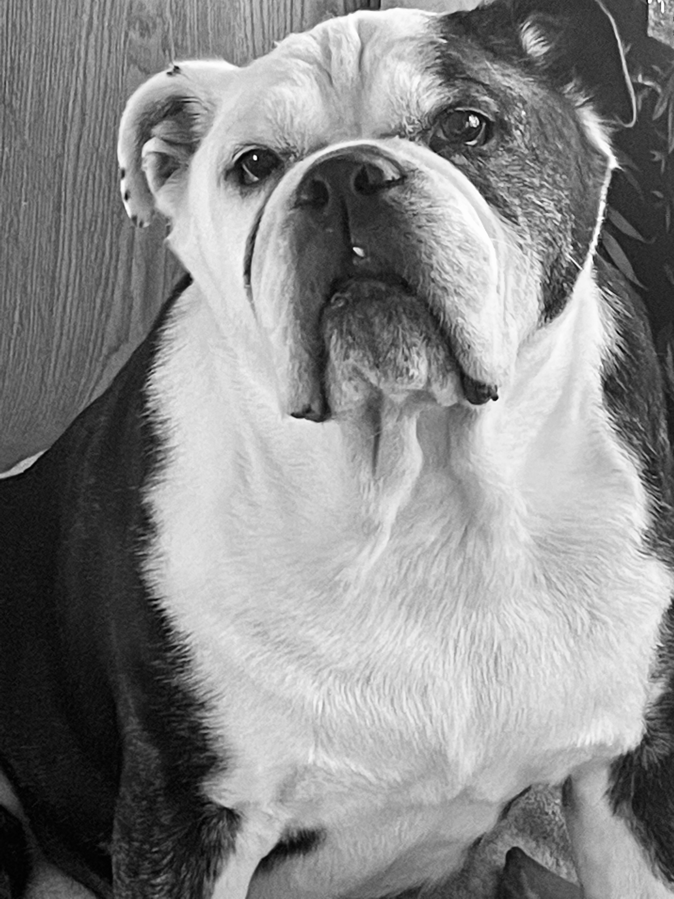

Welcome fellow English Bulldog lovers!
Origin of the English Bulldog
It's hard to imagine these lovable, slobbery silly dogs were bred in England, as early as the 1200's for "bullbaiting." Bullbaiting was a popular “blood sport,” a form of entertainment where the bulldogs provoked and ultimately conquered a bull that was chained to the ground. Most likely, the bull had been pepper-sprayed to create a more horrifying event. There was much money to be made, as the bulls and Bulldogs were paraded through the towns into the arenas. While much of the crowd was full of those who had placed bets, it was also a cultural event of the time period. Bred and known to be muscular, crushing, and violent, made them popular in dog fighting as well. When dogfighting was outlawed in 1835, the breed almost became extinct. Luckily, for English Bulldog lovers like me, owners bred out the hostility.
